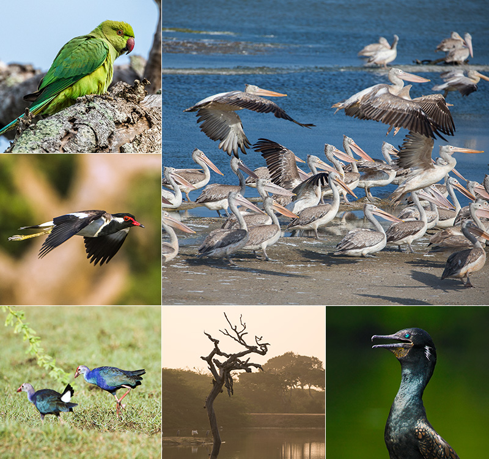
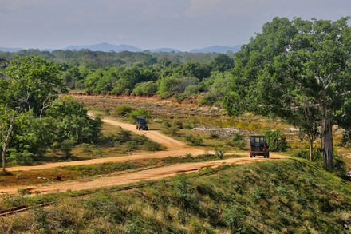
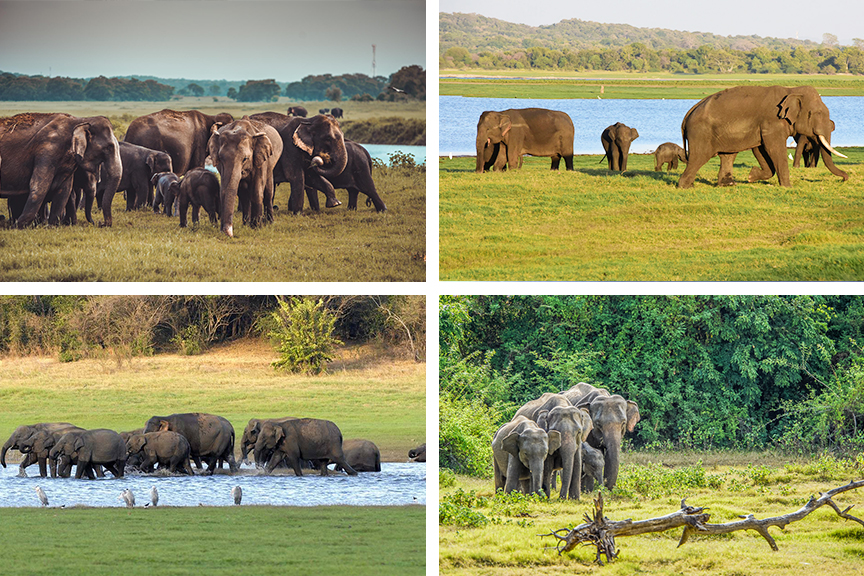

Bundala National Park

katagamuwa Sanctuary

The duty of protecting the ecosystem, which is home to a wide variety of plant and animal species and has left the nation with a vast amount of biodiversity, has been placed on the Department of Wildlife Conservation. The preservation of Sri Lanka's natural resources is the primary duty of the Department of natural Conservation, which was founded in 1949.
The main function is establishing and properly managing a network of wildlife reservations in Sri Lanka with the specific goals of protecting catchment areas of large reservoirs that supply water for agriculture and hydropower generation, conserving endemic and rear wildlife species. Protecting exclusive ecological systems and guaranteeing the survival of animal resources throughout all climatic and geographical zones. Ensuring the long-term survival of endangered endemic wildlife species through the implementation of specific programmes and the adoption of appropriate conservation measures.